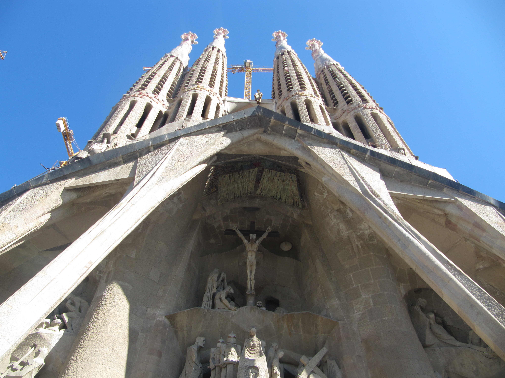

La Sagrada Familia
– "En byggnad från ett svunnen tid reser sig mot skyarna ur vardagsdammet i Barcelona".
Jag var skeptisk till en början. En 18-åring från Sverige kanske inte har ”kyrkskådning” högt på sin priolista. Men när det är en av Barcelonas topp fem sevärdheter så är det inget man bör undvika. Därför begav jag mig dit för att spana in läget, och tur var väl det!
Kyrkan var helt klart i en klass för sig, och intog lätt platsen som ”mäktigaste sevärdhet” enligt min mening. Man imponeras snabbt av den detaljrikhet som såväl kyrkans utsida och insida erbjuder. Kyrkans spetsiga torn och fasader är täckta av skulpturer, statyer och symboler, som många utspelar kända bibliska scener. Till exempel kan man se en scen av hur Jesufödelse gick till, och detaljrikheten är som sagt slående!
La Sagrada Familia (Den Heliga Familjen på svenska) är designad av Antonio Gaudí. Gaudí är en välkänd arkitekt vars byggnader utgör många av sevärdheterna i Barcelona. Byggnationen av kyrkan inleddes år 1880, men är långt från klar, då varje parti byggs enligt gamla traditioner. Dagens kyrka skiljer sig självklart mycket från när byggnationen startades. Det har diskuterats en hel del om när kyrkan ska vara färdig, men utifrån undersökningar av produktivitet m.m. planeras kyrkan vara klar till 2026, då 100-årsminnet av Gaudís död kommer att hållas.
Jag måste dock säga att det kan te sig smått ointressant för de yngsta besökarna, men det är ändå någonting man någon gång i sitt liv bör ha beskådat.
När du kommer väl kommer in i Sagrada Familia har du möjligheten att åka upp i tornen för att ta del av dess utsikt.En hiss kommer att ta dig upp medan trapporna kommer att vara nedvägen. Det kan vara lite svindlande att gå ner för de branta trapporna från tornen. Om du lider av höjdskräck eller klaustrofobi bör du tänka efter innan du beger dig upp!
Öppettider:
Oktober – Mars: 09:00 – 18:00
April – September: 09:00 – 20:00
25 och 26 December, 1 Januari och 06 Januari: 09:00 – 14:00.
Biljettpris: €13.00
Viktigt! Man måste se till att vara på plats i god tid. Antingen sent på eftermiddagen eller tidigt innan lunch. La Sagrada Familia är en extremt populär attraktion och köbildningen kan bli riktigt lång under rusningstid. Om man vill kan man preliminärboka sitt besök, och på så sätt bli insläppt i grupp vid en av ingångarna, och på det sättet slippa köbildningen!
Det är enkelt att ta sig till kyrkan, eftersom den är lätt att ha som riktmärke. Det finns även två hållplatser precis bredvid. Hållplatsen heter till och med Sagrada Familia och går att nå via den Blå Linjen (L5) och den Lila Linjen (L2).
Utanför kyrkan ligger en lång tvärgående gata vid namn Carrer Mallorca, så att följa den gatan kommer också att leda dig till rätt mål.